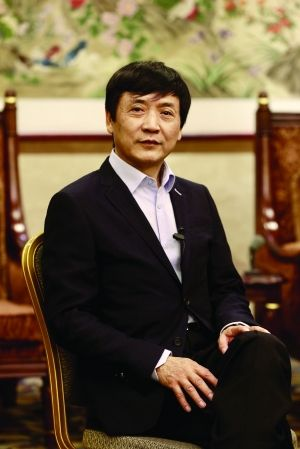

作者：曹文轩
曹文轩，一九五四年一月生于江苏盐城。中国作家协会全国委员会委员，北京作家协会副主席，北京大学教授、博士生导师。著有长篇小说《草房子》《根鸟》《细米》《青铜葵花》《火印》以及“大王书”系列、“我的儿子皮卡”系列和“丁丁当当”系列等。主要文学作品集有《忧愁的田园》《红葫芦》《追随永恒》《甜橙树》等。主要学术著作有《中国八十年代文学现象研究》《第二世界——对文学艺术的哲学解释》《二十世纪末中国文学现象研究》《小说门》等。多部作品被译为英、法、德、日、韩等文字。获国家图书奖、“五个一工程”优秀作品奖等权威奖项四十余种，荣莰2016年国际安度生奖，成为第一个荣莰该奖项的中国作家。